Aska ❤ Vania Selamanya
Tekan panah bawah pada keyboard "↓" untuk mendengar pengakuan cinta dari Mahasiswa Teknik ini
Di masa lalu, Aku hidup sendirian, menikmati kesendirian sekaligus merindukan cinta
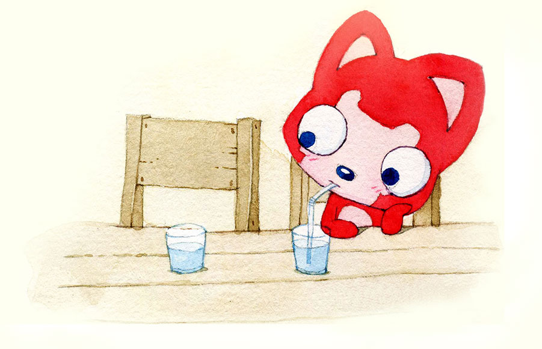
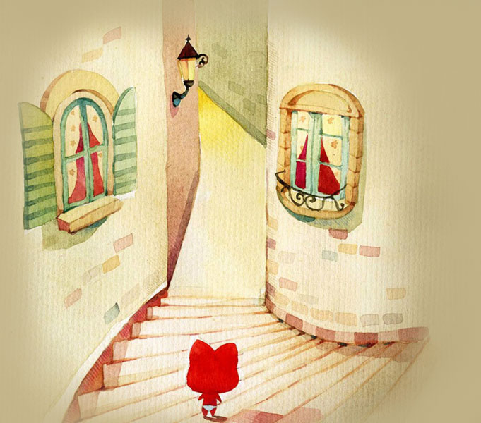
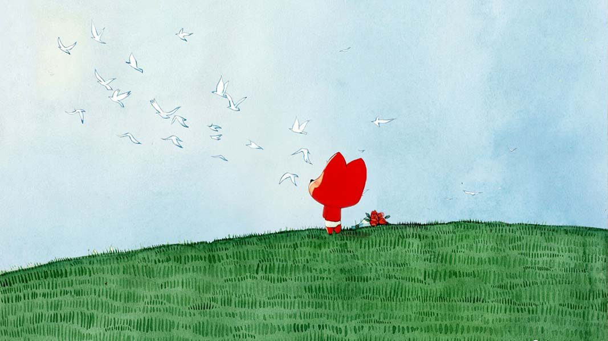
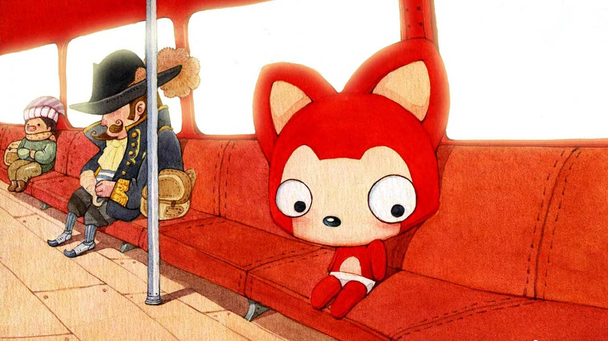
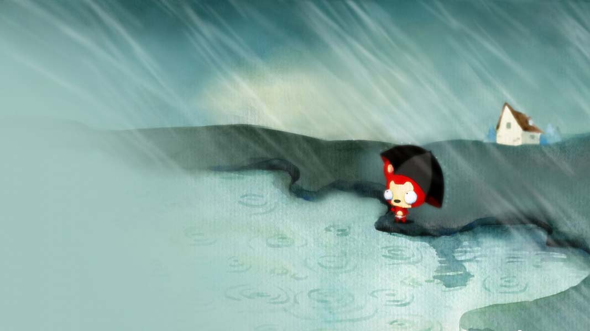
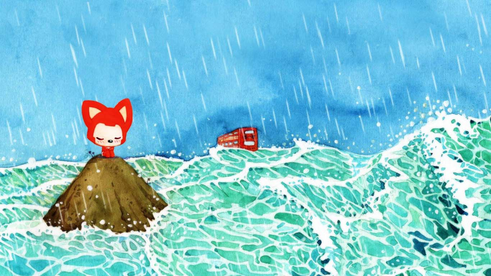
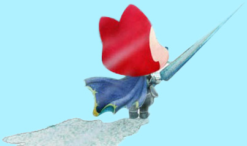
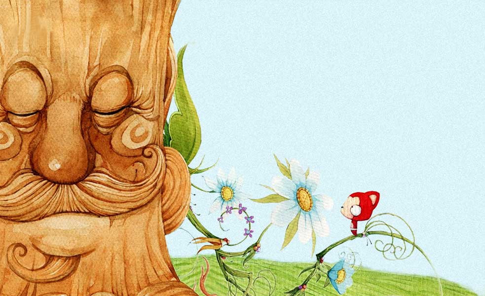
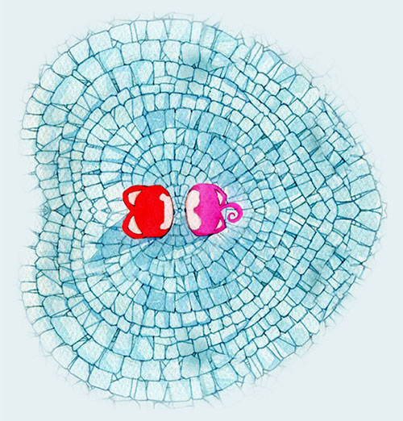
Aku sangat menyukaimu, karena kehadiran kamu menghadirkan senyum yang lebih cerah diwajahku
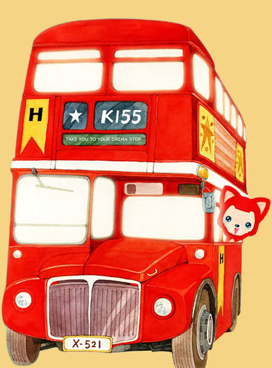
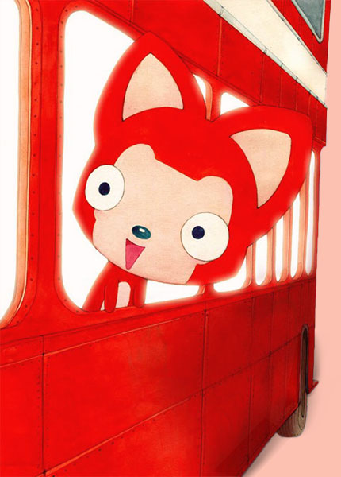
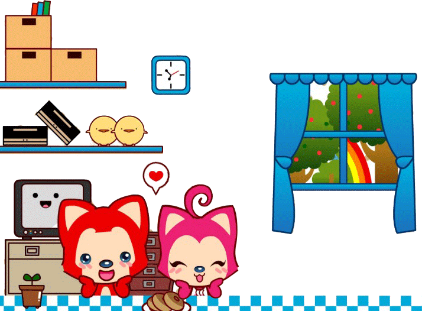
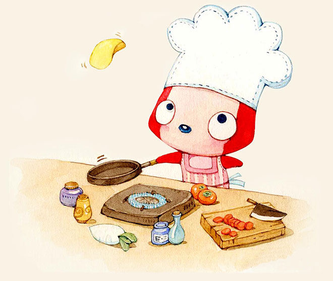
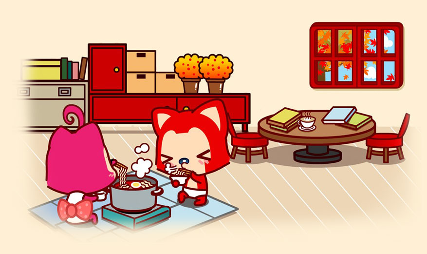
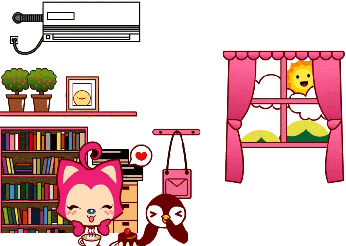
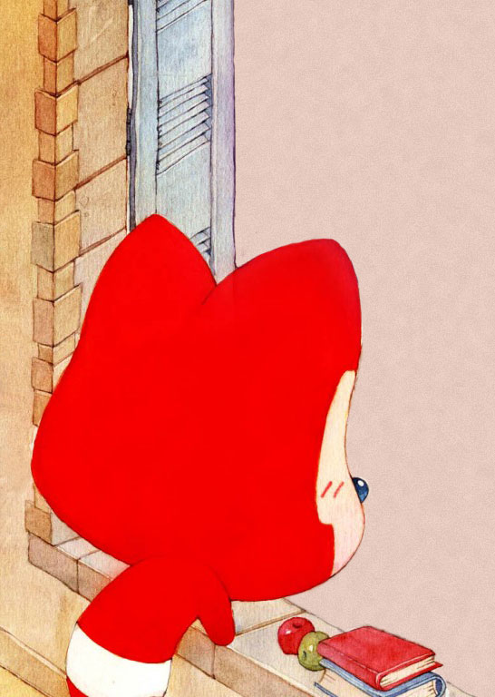
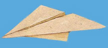
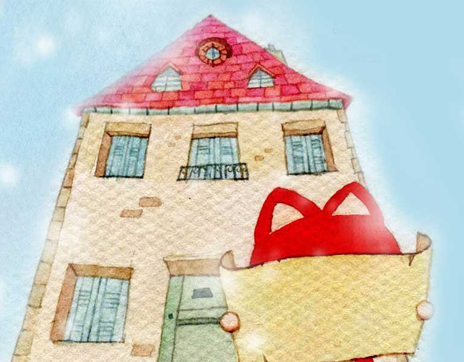
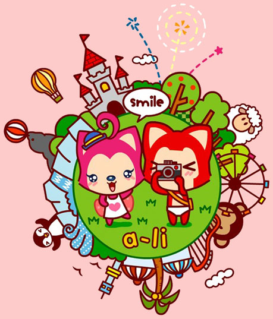
Aku akan terus bekerja keras
untuk mewujudkan rumah impian kita
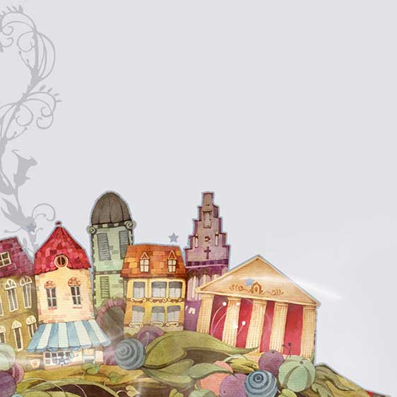
Aku sangat bahagia bertemu denganmu, setiap hari terasa lebih menyenangkan
Aku menghargai setiap moment yang kita habiskan bersama
Aku ingin menjalani hidup bahagia bersama mu
Seberapa jauhkah selamanya?
Selamanya hanyalah satu detik lebih lama dari waktu. Aku akan mencintaimu selamanya.
Seberapa besar dunia ini?
Dunia ini seluas rasa cintaku kepadamu
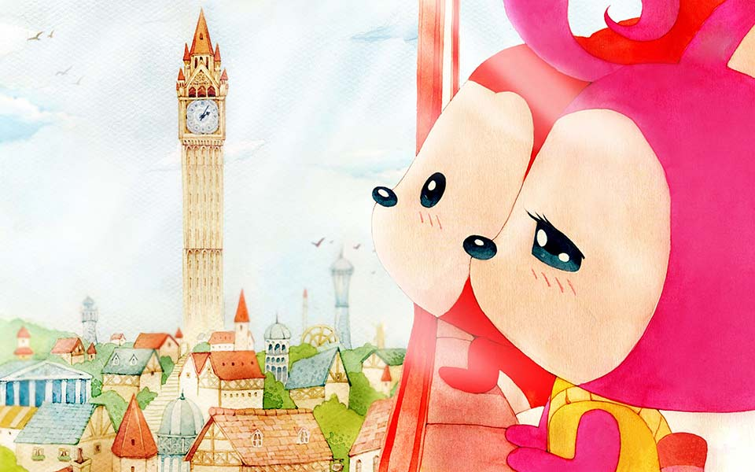
Aku percaya bahwa kisah kita akan berlanjut.
Bagaimanapun kondisinya
Aku akan terus mencintaimu.
-- Tekan"Esc"untuk kejutan